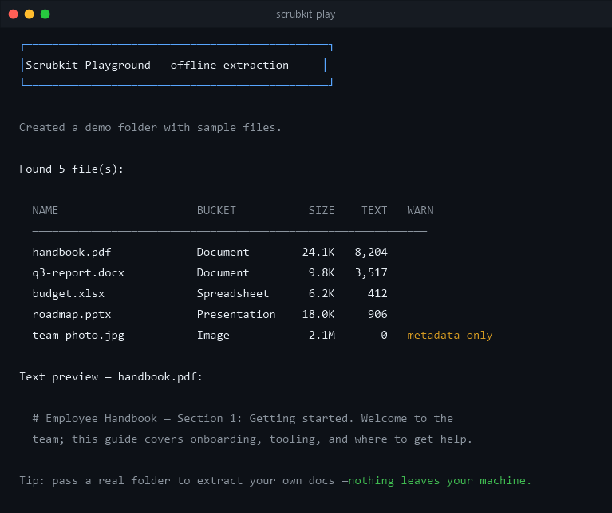

Scrubkit
Point at a folder, get a clean table of file text + metadata back — fully offline. Local-first data preparation for RAG and search pipelines, on .NET 8 and .NET Standard 2.0.
scrubkit — folder extraction
$ dotnet add package Scrubkit
scanning ./Docs …
handbook.pdf Document · 48 KB
budget.xlsx Spreadsheet · 12 KB
warn: team-photo.jpg → EXIF only
✓ clean table returned
Offline
No network calls, no telemetry. Everything runs locally on your infrastructure for maximum privacy.
Fast Core
Extraction for PDF, Office, and text via PdfPig + MetadataExtractor — a small dependency set and streaming, bounded-parallel processing.
Pluggable
Add or override formats via IFileExtractor. Opt into text transforms — redaction, masking — with an IRedactor you supply.
Robust
A single unreadable file never crashes the batch. Problems surface as warnings on the specific row.
GET STARTED
Simple Installation
Add Scrubkit to your .NET project with a single command. Multi-targeted for net8.0 and netstandard2.0.
Quick Start
Get up and running in a few lines. Point FolderScrubber at a directory and await one flat table of results.
using Scrubkit; var scrubber = new FolderScrubber(new ReadOptions { Recursion = Recursion.AllNested }); IReadOnlyList<FileRecord> table = await scrubber.ReadAsync(@"C:\Docs");

Recipe: Prepare for RAG
Stream document folders straight into a vector store. The async stream API keeps the memory footprint low even on massive directories.
- check_circle Text + metadata ready to embed
- check_circle Length-clipped, index-friendly chunks
- check_circle Streaming, order-preserving I/O
var scrubber = new FolderScrubber(new ReadOptions { MaxTextLength = 8_000, // keep chunks index-friendly }); await foreach (var doc in scrubber.ReadStreamAsync(@"C:\Docs")) { if (doc.Text.Length == 0) continue; await index.UpsertAsync( id: doc.Path, text: doc.Text, metadata: doc.Metadata); }
One core, a growing family of add-ons
Start with the core package — it reads PDF, Office, text, and image EXIF out of the box.
Reach for an optional add-on when you need more formats. Every add-on references only
Scrubkit.Abstractions, so it stays lightweight and pulls in no heavy dependencies.
Scrubkit
The engine — FolderScrubber with built-in PDF, Office, text, and image-EXIF extractors. Everything most projects need.

Scrubkit.Abstractions
Dependency-free contracts — IFileExtractor, FileRecord, ReadOptions. Reference this to author your own add-on.

Scrubkit.Email
.eml (MIME) email — headers become metadata, the body becomes text. Multipart, base64, and quoted-printable aware.

Scrubkit.OpenDocument
OpenDocument .odt / .ods / .odp from LibreOffice / OpenOffice — body text plus Title, Author, and Subject.

Writing your own? Implement IFileExtractor, reference
Scrubkit.Abstractions, and register it via ReadOptions.Extractors —
it's tried before the built-ins, so you can add or override any format.
Try Without Installing
Run the playground demo to see the table output format immediately.